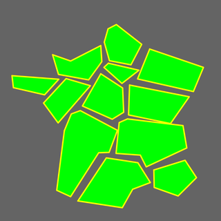
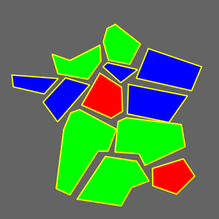
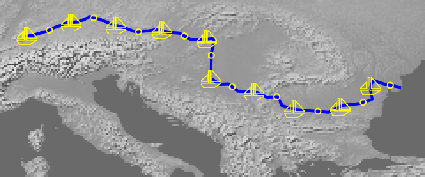
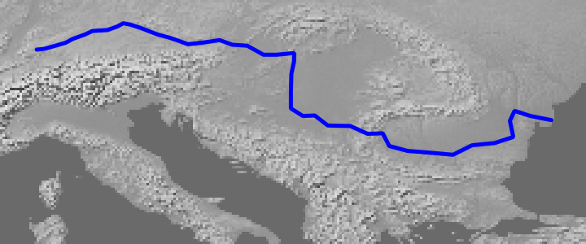

MS RFC 124: Improving SLD Support in MapServer¶
- Last Updated:
2020-04-05
- Author:
Jérome Boué
- Contact:
- Status:
Draft
- Version:
(Targeting MapServer 8.0)
Overview¶
The current implementation of SLD/SE in MapServer has many drawbacks. This RFC proposes to address some of them towards a better support. So far, the following issues have been identified:
Arithmetic expressions: MapServer implementation of SLD doesn’t handle <Add>, <Sub>, <Mul>, <Div> operations or <Literal> or <PropertyName> elements in <SvgParameter> or in other elements expected to hold arithmetic expressions.
WMS GetStyles request: A WMS GetStyles request returns a SLD file based only on Mapfile configuration even if a SLD or SLD_BODY parameter is present in the request.
Style layering: When several styling rules apply to a feature, only the first one is taken into account, instead of appliyng them all by following the painters model as described in Symbology Encoding specification.
Mark or ExternalGraphic in LineSymbolizer: MapServer implementation of SLD doesn’t handle <Mark> or <ExternalGraphic> elements in a <LineSymbolizer> element.
LineSymbolizer and PolygonSymbolizer in Rule: MapServer implementation of SLD doesn’t handle both <LineSymbolizer> and <PolygonSymbolizer> in the same <Rule> element (which is more expressive than both <Fill> and <Stroke> in the same <PolygonSymbolizer>).
The next sections of this RFC develop a description of each issue and the proposed solution.
Proposed solution¶
1. Literal constants, variables and arithmetic expressions¶
Currently, MapServer only supports raw constants in <CssParameter> or <SvgParameter> tags, e.g.:
<SvgParameter name="stroke">#0000ff</SvgParameter>
<SvgParameter name="stroke-width">2.0</SvgParameter>
The objective is to support <Literal> and <PropertyName> as well as arithmetic expressions, e.g.:
<!-- Literal, PropertyName -->
<SvgParameter name="stroke"> <Literal>#0000ff</Literal> </SvgParameter>
<SvgParameter name="stroke-width"> <PropertyName>LINE_WIDTH</PropertyName> </SvgParameter>
<!-- Arithmetic expression -->
<SvgParameter name="stroke-width">
<Mul>
<PropertyName>CATEGORY</PropertyName>
<Literal>3</Literal>
</Mul>
</SvgParameter>
This RFC proposes to extent this syntax to the following tags:
Parent tag hierarchy |
Target tags |
|---|---|
<PolygonSymbolizer><Fill>
|
<SvgParameter name=”fill”>
<SvgParameter name=”fill-opacity”>
|
<PolygonSymbolizer><Stroke>
<LineSymbolizer><Stroke>
|
<SvgParameter name=”stroke”>
<SvgParameter name=”stroke-width”>
<SvgParameter name=”stroke-opacity”>
|
<PointSymbolizer><Graphic>
|
<Size>
<Opacity>
<Rotation>
|
<PointSymbolizer><Graphic><Displacement>
|
<DisplacementX>
<DisplacementY>
|
<PointSymbolizer><Graphic><Mark><Fill>
|
<SvgParameter name=”fill”>
|
<PointSymbolizer><Graphic><Mark><Stroke>
|
<SvgParameter name=”stroke”>
<SvgParameter name=”stroke-width”>
|
<TextSymbolizer>
|
<Rotation>
|
<TextSymbolizer><Font>
|
<SvgParameter name=”font-size”>
|
<TextSymbolizer><Fill>
|
<SvgParameter name=”fill”>
|
<TextSymbolizer><Halo><Fill>
|
<SvgParameter name=”fill”>
|
Adding arithmetic expression support to style and label properties involves the creation of a new field array, named exprBindings[], in styleObj and labelObj data structures. This field array stores expression strings converted from SLD syntax to MapFile syntax. It is handled in a way similar to existing bindings[] field array, used to store attribute names.
In addition, a new function is created to parse SLD arithmetic expressions and perform syntax conversion: msSLDParseOgcExpression().
A by-product effect is that adding support for arithmetic expressions in MapFile styles would be effortless.
2. WMS GetStyles request¶
WMS GetStyles request provides a SLD document based on MapFile contents. Currently this request doesn’t take into account an SLD document passed through SLD or SLD_BODY URL parameters. Moreover this translation lacks many basic styling features present in input MapFile.
This RFC proposes both to integrate input SLD document and enhance conversion from MapFile. The resulting SLD document generated by GetStyles request will be a combination of MapFile and SLD specified in the request, as close as possible to the actual styles being applied.
Enhancements concern the following items:
Description |
MapFile |
SLD (highlighted lines show enhancements) |
|---|---|---|
SYMBOL (<PointSymbolizer>): Both color and outline color are generated, including opacity (can be specified in input SLD). ANGLE, OFFSET and global OPACITY are generated. |
LAYER
TYPE POINT
STYLE
COLOR 0 0 255
OUTLINECOLOR 255 0 0
OPACITY 50
SYMBOL "star"
SIZE 20
ANGLE 180
OFFSET 2 2
END
END
|
<se:PointSymbolizer>
<se:Graphic>
<se:Mark>
<se:WellKnownName>star</se:WellKnownName>
<se:Stroke>
<se:SvgParameter name="stroke">#ff0000</se:SvgParameter>
<se:SvgParameter name="stroke-opacity">1</se:SvgParameter>
<se:SvgParameter name="stroke-width">1</se:SvgParameter>
</se:Stroke>
<se:Fill>
<se:SvgParameter name="fill">#0000ff</se:SvgParameter>
<se:SvgParameter name="fill-opacity">0.10</se:SvgParameter>
</se:Fill>
</se:Mark>
<se:Size>20</se:Size>
<se:Rotation>180</se:Rotation>
<se:Displacement>
<se:DisplacementX>2</se:DisplacementX>
<se:DisplacementY>2</se:DisplacementY>
</se:Displacement>
<se:Opacity>0.5</se:Opacity>
</se:Graphic>
</se:PointSymbolizer>
|
POLYGON (<PolygonSymbolizer>): Outline opacity is generated. |
LAYER
TYPE POLYGON
CLASS
STYLE
WIDTH 1
OPACITY 50
COLOR 0 255 255
OUTLINECOLOR 255 0 255
END
END
END
|
<se:PolygonSymbolizer>
<se:Fill>
<se:SvgParameter name="fill">#00ffff</se:SvgParameter>
<se:SvgParameter name="fill-opacity">0.50</se:SvgParameter>
</se:Fill>
<se:Stroke>
<se:SvgParameter name="stroke">#ff00ff</se:SvgParameter>
<se:SvgParameter name="stroke-width">1.00</se:SvgParameter>
<se:SvgParameter name="stroke-opacity">0.50</se:SvgParameter>
</se:Stroke>
</se:PolygonSymbolizer>
|
LABEL (<TextSymbolizer>): Outline color, aka Halo, is generated. |
LAYER
CLASS
LABEL
TEXT "[name]"
COLOR 255 255 255
OUTLINECOLOR 0 255 0
OUTLINEWIDTH 2
TYPE TRUETYPE
FONT vera-bold
SIZE 12
OFFSET 2 20
ANGLE 15
END
END
END
|
<se:TextSymbolizer>
<se:Label>
<se:PropertyName>name</se:PropertyName>
</se:Label>
<se:Font>
<se:SvgParameter name="font-family">vera</se:SvgParameter>
<se:SvgParameter name="font-weight">bold</se:SvgParameter>
<se:SvgParameter name="font-size">12</se:SvgParameter>
</se:Font>
<se:Fill>
<se:SvgParameter name="fill">#ffffff</se:SvgParameter>
</se:Fill>
<se:LabelPlacement>
<se:PointPlacement>
<se:Displacement>
<se:DisplacementX>2</se:DisplacementX>
<se:DisplacementY>20</se:DisplacementY>
</se:Displacement>
</se:PointPlacement>
<se:AnchorPoint>
<se:AnchorPointX>0.5</se:AnchorPointX>
<se:AnchorPointY>0.5</se:AnchorPointY>
</se:AnchorPoint>
<se:Rotation>15</se:Rotation>
</se:LabelPlacement>
<se:Halo>
<se:Radius>2</se:Radius>
<se:Fill>
<se:SvgParameter name="fill">#00ff00</se:SvgParameter>
</se:Fill>
</se:Halo>
</se:TextSymbolizer>
|
3. Style layering¶
MapServer is designed to use only the first applicable class inside a layer for the rendering of a feature (see CLASS description in LAYER page).
On the other hand, SLD/SE defines a policy named “painters model” in which all applicable rules (SLD equivalent of classes) are used for the rendering of a feature (see OpenGIS Symbology Encoding Implementation Specification, p.7).
Here is a comparison example of both renderings. The same stylesheet is written in MapFile and in SLD and applied on a sketch of France regions. Stylesheet specification is:
Class #1: Polygons are filled with green color
Class #2: Polygons with 3 to 5 edges are filled with red color
Class #3: Polygons with exactly 4 edges are filled with blue color
Mapfile |
SLD |
|---|---|
Only the first applicable class is used for rendering |
All applicable classes are used for rendering, each on top of the previous ones |
|  |  |
In order to handle both rendering modes in their respective contexts, a new field named rendermode is added to layerObj data structure. This is used in msDrawVectorLayer() function in mapdraw.c file. The two possible values for this field are:
- MS_FIRST_CLASS
Default rendering mode, set on layers defined in a MapFile. In this mode, msDrawVectorLayer() fetches the first applicable class for each shape and uses only that class for rendering.
- MS_PAINTERS_MODEL
SLD rendering mode, set on layers defined in a SLD document. In this mode, msDrawVectorLayer() iterates over all applicable classes for each shape and uses them one after the other for rendering. Moreover, as msDrawShape() changes shape coordinates values and as shapes are potentially drawn multiple times, shapes must be saved before calls to msDrawShape() and restored after.
As for arithmetic expressions, offering choice of rendering mode in MapFiles, e.g., by adding a RENDERMODE parameter in LAYER section, would not be technically difficult.
4. Mark or ExternalGraphic in LineSymbolizer¶
Current implementation of SLD/SE in MapServer fails at rendering symbols (<Mark> or <ExternalGraphic> tags) on lines (<LineSymbolizer> tag). As an illustration, let’s draw a blue line representing the Danube river with alterning circles (implemented by <Mark> tag) and boats (implemented by <ExternalGraphic> tag) on it. Below, the first picture is produced with a MapFile and the second one with a SLD document.
MapFile (correct rendering) |
 |
|---|---|
SLD (incorrect rendering) |
 |
A source code inspection shows:
<ExternalGraphic> parameter has to be validated against authorized patterns (see mapogcsld.c L2140-L2145). This involves setting “sld_external_graphic” attribute in VALIDATION block of MapFile’s WEB section, e.g.:
WEB VALIDATION "sld_external_graphic" "^.*/sld/data/.*" END [...] END
Current implementation of <Mark> fails at rendering symbols without <Fill> specification: <Stroke> color is always assigned to OUTLINECOLOR variable (see mapogcsld.c L1697-L1703). When <Fill> tag is not present, it should be assigned to COLOR variable.
The proposed solution consists in a documentation update (in SLD document) for the first issue and a bug fix for the second one.
5. LineSymbolizer and PolygonSymbolizer in Rule¶
Current implementation of SLD/SE in MapServer doesn’t expect a mix of <LineSymbolizer> and <PolygonSymbolizer> in the same <Rule>, and therefore produces an incorrect rendering in that case. As an illustration, let’s draw a blue polygon with a yellow outline by using two SLD variants.
The first one is a single <PolygonSymbolizer> containing both <Stroke> section for the outline and <Fill> section for the inner area.
The second one is a <LineSymbolizer> containing a <Stroke> section for the outline followed by a <PolygonSymbolizer> containing a <Fill> section for the inner area.
<Stroke> and <Fill> inside <PolygonSymbolizer> |
<LineSymbolizer> and <PolygonSymbolizer> inside <Rule> |
|---|---|
<FeatureTypeStyle>
<Rule>
<PolygonSymbolizer>
<Stroke>
<SvgParameter name="stroke">
<Literal>#FFFF00</Literal>
</SvgParameter>
</Stroke>
<Fill>
<SvgParameter name="fill">
<Literal>#0000FF</Literal>
</SvgParameter>
</Fill>
</PolygonSymbolizer>
</Rule>
</FeatureTypeStyle>
|
<FeatureTypeStyle>
<Rule>
<LineSymbolizer>
<Stroke>
<SvgParameter name="stroke">
<Literal>#FFFF00</Literal>
</SvgParameter>
</Stroke>
</LineSymbolizer>
<PolygonSymbolizer>
<Fill>
<SvgParameter name="fill">
<Literal>#0000FF</Literal>
</SvgParameter>
</Fill>
</PolygonSymbolizer>
</Rule>
</FeatureTypeStyle>
|
Correct rendering¶ |
Incorrect rendering¶ |
A source code inspection shows that all SLD/SE tags are taken into account. The proposed solution consists in a simple bug fix aimed at feeding mapObj data structure the same way for both cases.
In the current implementation, a new STYLE is generated for each <Stroke> or <Fill> tag. But in the first case, <Fill> tags are handled before <Stroke> tags, whereas in the second case, <LineSymbolizer> tags, which contain only <Stroke> are handled before <PolygonSymbolizer> tags, able to contain both <Stroke> and <Fill> tags.
Moreover <LineSymbolizer><Stroke> color is assigned to COLOR variable, whereas <PolygonSymbolizer><Stroke> outline color is assigned to OUTLINECOLOR variable.
The proposed solution consists on one hand to handle <PolygonSymbolizer> tags before <LineSymbolizer> tags, and on the second hand to move COLOR value to OUTLINECOLOR for styles defined by <LineSymbolizer> but applicable to polygon layers.
Testing¶
The msautotest/sld suite will be created and populated with test cases focusing on these new or improved features.
Moreover the msautotest/{gdal,misc,query,renderers,wxs} test suites will be run during development in order to make sure that no regression occurs.
Documentation¶
MapServer SLD documentation page will be updated according to the proposed features described in this RFC.
Backwards compatibility issues¶
No compatibility issues are expected. The goal is to provide a better SLD support without changing any other existing behaviour.
Affected Files¶
mapcopy.c
mapdraw.c
mapfile.c
maplayer.c
mapogcsld.c
mapogcsld.h
mapserver.h
maputil.c
mapwms.c
Credits¶
Thanks to funding from the French Ministry of Defence.
Voting history¶
Adopted with +1 from PSC members SethG, MikeS, JukkaR, TomK, JeffM, EvenR, SteveL, DanielM, JeromeB.